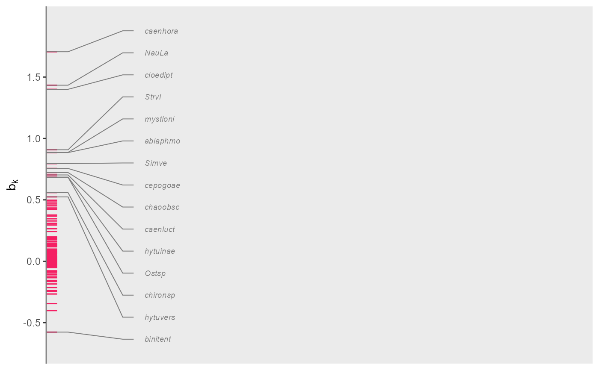
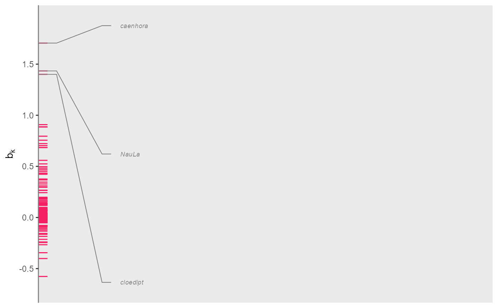
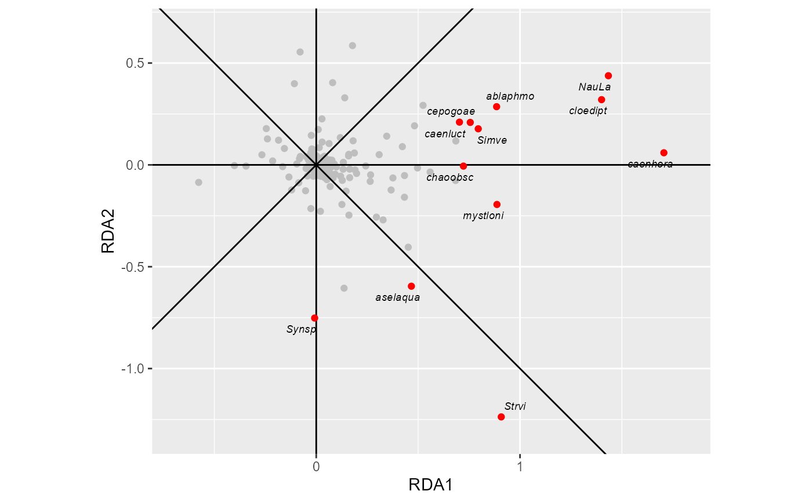
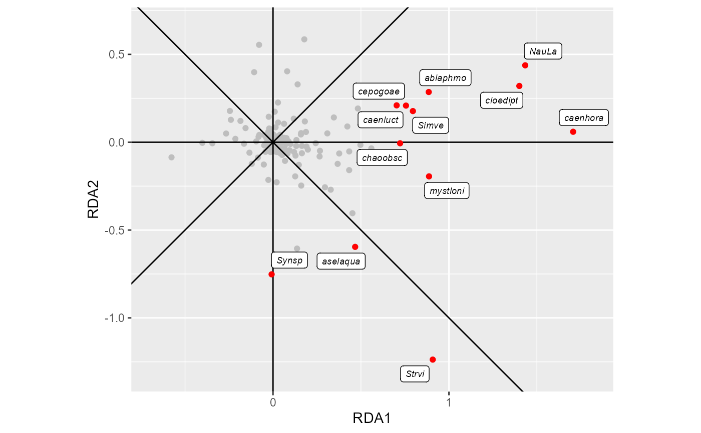
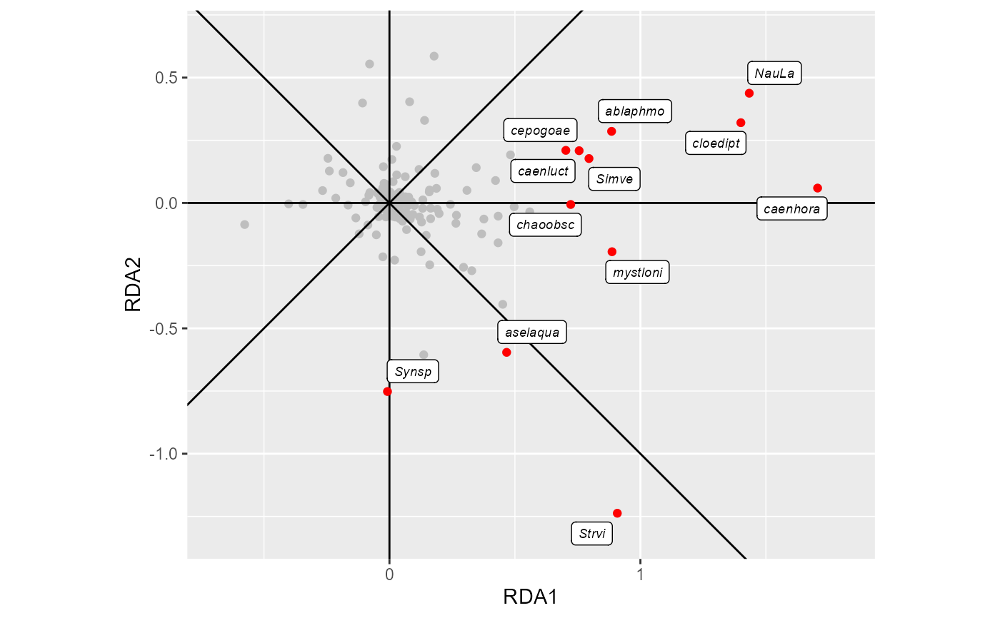

plot_species_scores_2d creates an ordination diagram of species with selection criterion
of which species to plot with names.
plot_species_scores_2d(
species_scores,
threshold = 7,
speciesname = NULL,
scorenames = c("RDA1", "RDA2"),
selectname = "Fratio2",
label.repel = FALSE,
withnames_only = FALSE,
max.overlaps = 10,
mult_expand = 0.1,
verbose = TRUE
)a species-by-scores matrix, a data frame with rownames (species names) or a tibble
with variable with name speciesname containing species names and
a column or variabe with names scorenames containing the scores
(default: c("RDA1","RDA2") being the species score names from rda.
species with criterion (specified by selectname) higher than the threshold are displayed.
Default: 5
(which is the threshold F-ratio for testing two regression coefficients (one for each axis)
at p=0.01 with 60 df for the error in a multiple regression
of each single species onto the condition and the ordination axes).
If selectname is not in the data the threshold is divided by ten, so that the default is 0.5.
name of the variable containing the species names (default NULL uses rownames).
names of the two columns or variables containing the species scores to be plotted
(default c("RDA1","RDA2")).
name of the column or variable containing the criterion for the selection of species to be displayed
Default: "Fratio2"; if selectname is not found in species_scores,
set to the Euclidian norm (length) of the vectors defined by row-wise combining the values defined by scorenames.
logical (default: FALSE) for using labels in white boxes with borders using geom_label_repel
instead of using plain text labels using geom_text_repel.
logical to plot the species that exceed the treshold only, i.e. to not plot points indicating species
that do not reach the threshold. (Default: FALSE).
exclude text labels that overlap too many things. Default: 10 (see geom_text_repel).
fraction of range expansion of the diagram (default = 0.1). See expansion.
logical for printing the number of species
that geom_text_repel or geom_label_repel will try to name in the plot
out of the total number of species (default: TRUE).
a ggplot object
The names of species are added using geom_text_repel or geom_label_repel.
These functions may not be able to plot the names of all selected species.
This issue can be diminished by increasing the value of max.overlaps.
data(pyrifos, package = "vegan") #transformed species data from package vegan
#the chlorpyrifos experiment from van den Brink & ter Braak 1999
Design <- data.frame(
week=gl(11, 12, labels=c(-4, -1, 0.1, 1, 2, 4, 8, 12, 15, 19, 24)),
dose=factor(rep(c(0.1, 0, 0, 0.9, 0, 44, 6, 0.1, 44, 0.9, 0, 6), 11)))
library(vegan)
mod_rda <- rda( pyrifos ~ dose:week + Condition(week), data = Design)
#>
#> Some constraints or conditions were aliased because they were redundant. This
#> can happen if terms are constant or linearly dependent (collinear):
#> 'dose44:week-4', 'dose44:week-1', 'dose44:week0.1', 'dose44:week1',
#> 'dose44:week2', 'dose44:week4', 'dose44:week8', 'dose44:week12',
#> 'dose44:week15', 'dose44:week19', 'dose44:week24'
species_scores= scores(mod_rda,choices =1:2, display="sp",scaling = 1)
library(PRC)
head(rdacca_taxon_stats(mod_rda)) # stats per species
#> Var FitCE FitE Cfit1 Fratio1
#> Simve 2.6532363 0.7445540 0.5301872 0.37998997 112.411089
#> Daplo 1.9284326 0.6716078 0.3173191 0.15519258 37.966156
#> Cerpu 1.3570910 0.7312918 0.3269379 0.03028521 6.428153
#> Alogu 0.6614163 0.6542465 0.2391233 0.01654335 3.493023
#> Aloco 0.1899789 0.5043404 0.3404953 0.02301403 3.396316
#> Alore 0.7694871 0.7428779 0.3126996 0.01799620 3.913455
get_focal_and_conditioning_factors(mod_rda) # factors from the model
#> $`focal factor`
#> [1] "dose"
#>
#> $condition
#> [1] "week"
#>
#> attr(,"interaction")
#> [1] TRUE
species_scores= vegan::scores(mod_rda,choices =1:2, display="sp",scaling = 2)
# 1-d vertical plot of species scores (a cut of RDA1-scores at 0.5)
plot_species_scores_bk(species_scores)
#> 15 species with names out of 178 species

# a cut of RDA1-scores at 1.0 (as scoresname is unset)
plot_species_scores_bk(species_scores, threshold = 14)
#> 3 species with names out of 178 species

plot_species_scores_2d(species_scores)
#> 12 species with names out of 178 species

plot_species_scores_2d(species_scores, label.repel = TRUE)
#> 12 species with names out of 178 species

plot_species_scores_2d(species_scores, max.overlaps = 30, label.repel = TRUE)
#> 12 species with names out of 178 species
